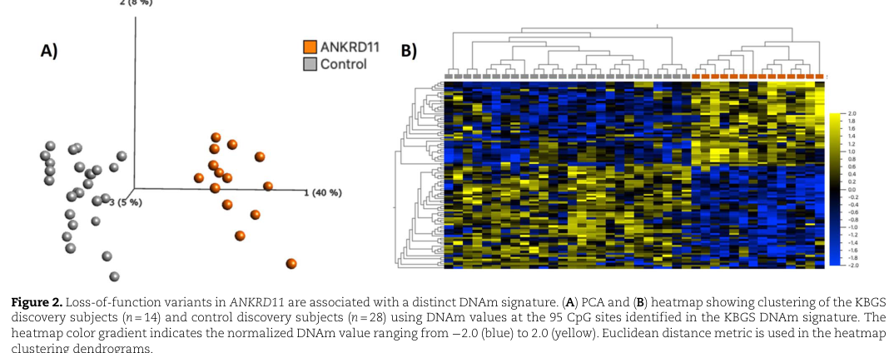

KBG syndrome (MONDO:0007846, OMIM #148050) is a rare autosomal dominant multisystem neurodevelopmental disorder caused by haploinsufficiency of ANKRD11, a chromatin-associated transcriptional regulator at 16q24.3. It is classically characterized by macrodontia of the upper central incisors, a distinctive facial gestalt (triangular face, thick/bushy eyebrows, prominent ears, long philtrum), postnatal short stature, skeletal (notably costovertebral and hand) anomalies, and developmental delay / intellectual disability with frequent behavioral comorbidity. Disease results from either heterozygous loss-of-function ANKRD11 sequence variants (most often frameshift or nonsense) or 16q24.3 copy-number deletions involving ANKRD11. The disorder is increasingly classified among the chromatinopathies and has a recognizable blood DNA methylation signature.
Ask a research question about KBG Syndrome. OpenScientist will conduct autonomous deep research using the Disorder Mechanisms Knowledge Base and PubMed literature (typically 10-30 minutes).
Do not include personal health information in your question. Questions and results are cached in your browser's local storage.
name: KBG Syndrome
creation_date: "2026-06-04T12:00:00Z"
category: Mendelian
description: >-
KBG syndrome (MONDO:0007846, OMIM #148050) is a rare autosomal dominant
multisystem neurodevelopmental disorder caused by haploinsufficiency of
ANKRD11, a chromatin-associated transcriptional regulator at 16q24.3. It is
classically characterized by macrodontia of the upper central incisors, a
distinctive facial gestalt (triangular face, thick/bushy eyebrows, prominent
ears, long philtrum), postnatal short stature, skeletal (notably
costovertebral and hand) anomalies, and developmental delay / intellectual
disability with frequent behavioral comorbidity. Disease results from either
heterozygous loss-of-function ANKRD11 sequence variants (most often frameshift
or nonsense) or 16q24.3 copy-number deletions involving ANKRD11. The disorder
is increasingly classified among the chromatinopathies and has a recognizable
blood DNA methylation signature.
disease_term:
preferred_term: KBG Syndrome
term:
id: MONDO:0007846
label: KBG syndrome
parents:
- autosomal dominant syndromic intellectual disability
- multiple congenital anomalies/dysmorphic syndrome-intellectual disability
- chromatinopathy
references:
- reference: PMID:29565525
title: "KBG Syndrome."
tags:
- GeneReviews
- reference: PMID:29258554
title: "KBG syndrome."
- reference: PMID:36446582
title: "Clinical description, molecular delineation and genotype-phenotype correlation in 340 patients with KBG syndrome: addition of 67 new patients."
pathophysiology:
- name: ANKRD11 Haploinsufficiency
description: >
KBG syndrome results predominantly from haploinsufficiency of ANKRD11
(ankyrin repeat domain-containing protein 11) at 16q24.3. Heterozygous
loss-of-function sequence variants (most frequently frameshift and
nonsense), as well as 16q24.3 microdeletions encompassing part or all of
ANKRD11 (and even deletions limited to the non-coding exon 1 / upstream
region), reduce functional ANKRD11 dosage. Precise levels of ANKRD11
transcript/protein are essential for normal human development, so reduced
dosage is the unifying mechanism shared by sequence-variant and CNV cases.
downstream:
- target: Disrupted Chromatin-Associated Transcriptional Regulation
description: >
Reduced ANKRD11 dosage impairs its function as a nuclear
chromatin-associated transcriptional regulator.
- target: Impaired Growth Plate Chondrocyte Differentiation
description: >
ANKRD11 deficiency disrupts the orderly differentiation of growth
plate chondrocytes, contributing to postnatal short stature.
cell_types:
- preferred_term: neuron
term:
id: CL:0000540
label: neuron
biological_processes:
- preferred_term: regulation of transcription
term:
id: GO:0006355
label: regulation of DNA-templated transcription
modifier: DECREASED
evidence:
- reference: PMID:29258554
reference_title: "KBG syndrome."
supports: SUPPORT
evidence_source: HUMAN_CLINICAL
snippet: "The vast majority of identified variants are loss of function, which include nonsense and frameshift variants and larger deletions at 16q24.3. Haploinsufficiency appears to be the mechanism of pathogenicity."
explanation: >
The foundational Orphanet review states that ANKRD11 loss-of-function
variants and 16q24.3 deletions act through haploinsufficiency.
- reference: PMID:40004465
reference_title: "16q24.3 Microdeletions Disrupting Upstream Non-Coding Region of ANKRD11 Cause KBG Syndrome."
supports: SUPPORT
evidence_source: HUMAN_CLINICAL
snippet: "Heterozygous chromosomal deletion encompassing the partial or entire ANKRD11 gene, as well as the loss of function mutations, result in haploinsufficiency of the gene, leading to KBG syndrome. This indicates that precise levels of ANKRD11 transcripts or protein are essential for human development."
explanation: >
Confirms that both CNV deletions and LoF mutations converge on ANKRD11
haploinsufficiency, and that ANKRD11 dosage is developmentally critical.
- name: Disrupted Chromatin-Associated Transcriptional Regulation
description: >
ANKRD11 is a nuclear transcriptional regulator that controls expression of
key developmental genes by recruiting chromatin remodelers and interacting
with transcriptional repressors and activators, including HDAC-containing
and p160 coactivator complexes. Reduced ANKRD11 function therefore impairs
chromatin-linked transcriptional regulation, placing KBG syndrome among the
"chromatinopathies." Functional studies of truncating variants show escape
from nonsense-mediated decay, aberrant nuclear accumulation of truncated
protein, and reduced transactivation of target promoters such as
CDKN1A/P21, implicating impaired transcriptional regulatory function and,
for some alleles, a possible dominant-negative effect.
downstream:
- target: Global Transcriptome Dysregulation
description: >
Impaired chromatin-linked transcriptional regulation produces broad
downstream transcriptional changes across developmental gene programs.
cell_types:
- preferred_term: neuron
term:
id: CL:0000540
label: neuron
biological_processes:
- preferred_term: chromatin remodeling
term:
id: GO:0006338
label: chromatin remodeling
modifier: ABNORMAL
- preferred_term: chromatin organization
term:
id: GO:0006325
label: chromatin organization
modifier: ABNORMAL
- preferred_term: protein deacetylation (HDAC recruitment)
term:
id: GO:0006476
label: protein deacetylation
modifier: ABNORMAL
evidence:
- reference: PMID:39135054
reference_title: "Insights into the ANKRD11 variants and short-stature phenotype through literature review and ClinVar database search."
supports: SUPPORT
evidence_source: HUMAN_CLINICAL
snippet: "Ankyrin repeat domain containing-protein 11 (ANKRD11), a transcriptional factor predominantly localized in the cell nucleus, plays a crucial role in the expression regulation of key genes by recruiting chromatin remodelers and interacting with specific transcriptional repressors or activators during numerous biological processes."
explanation: >
Defines ANKRD11's molecular role as a nuclear transcriptional regulator
acting through chromatin remodelers and transcriptional repressors/
activators.
- reference: PMID:36440975
reference_title: "ANKRD11 pathogenic variants and 16q24.3 microdeletions share an altered DNA methylation signature in patients with KBG syndrome."
supports: SUPPORT
evidence_source: HUMAN_CLINICAL
snippet: "The ANKRD11 gene encodes the ankyrin repeat-containing protein 11A transcriptional regulator, which is expressed in the brain and implicated in neural development."
explanation: >
Supports ANKRD11's role as a transcriptional regulator expressed in
brain and implicated in neural development, the basis of the
neurodevelopmental phenotype.
- reference: PMID:38515699
reference_title: "Functional investigation of a novel ANKRD11 frameshift variant identified in a Chinese family with KBG syndrome."
supports: SUPPORT
evidence_source: IN_VITRO
snippet: "the truncated protein significantly reduced CDKN1A/P21-promoter luciferase activity in comparison to wild-type ANKRD11 protein, as well as a remarkably decrease in the endogenous CDKN1A/P21 mRNA level in HEK293 cells. These findings suggest a loss of transcriptional activation function and potentially a dominant-negative mechanism."
explanation: >
In vitro functional assay demonstrating that a truncating ANKRD11
variant impairs transcriptional activation of CDKN1A/P21, supporting
loss of transcriptional regulatory function.
- name: Global Transcriptome Dysregulation
description: >
Reduced ANKRD11 dosage produces broad downstream transcriptional changes.
Patient-derived cells carrying ANKRD11-involving deletions (including
microdeletions limited to the non-coding exon 1 and upstream region) show
reduced ANKRD11 transcript levels together with global transcriptome
alterations resembling those seen in classic KBG syndrome, linking the
primary chromatin-regulatory defect to systems-level developmental
dysregulation.
cell_types:
- preferred_term: neuron
term:
id: CL:0000540
label: neuron
biological_processes:
- preferred_term: regulation of transcription
term:
id: GO:0006355
label: regulation of DNA-templated transcription
modifier: ABNORMAL
evidence:
- reference: PMID:40004465
reference_title: "16q24.3 Microdeletions Disrupting Upstream Non-Coding Region of ANKRD11 Cause KBG Syndrome."
supports: SUPPORT
evidence_source: IN_VITRO
snippet: "Our molecular analysis showed that this deletion leads to reduction in the ANKRD11 transcript and global transcriptome alterations similar to those seen in KBG syndrome patients."
explanation: >
Shows that reduced ANKRD11 dosage from a non-coding deletion drives
global transcriptome alterations resembling KBG syndrome.
- name: Impaired Growth Plate Chondrocyte Differentiation
description: >
Postnatal short stature, a hallmark feature, is hypothesized to arise from
ANKRD11 deficiency disrupting the orderly differentiation of growth plate
chondrocytes and thereby impairing longitudinal endochondral bone growth.
This connects the chromatin/transcriptional defect to the skeletal growth
phenotype.
cell_types:
- preferred_term: growth plate chondrocyte
term:
id: CL:0000138
label: chondrocyte
biological_processes:
- preferred_term: chondrocyte differentiation
term:
id: GO:0002062
label: chondrocyte differentiation
modifier: ABNORMAL
- preferred_term: endochondral bone growth
term:
id: GO:0003416
label: endochondral bone growth
modifier: DECREASED
evidence:
- reference: PMID:39135054
reference_title: "Insights into the ANKRD11 variants and short-stature phenotype through literature review and ClinVar database search."
supports: SUPPORT
evidence_source: HUMAN_CLINICAL
snippet: "ANKRD11 deficiency potentially disrupts longitudinal bone growth by affecting the orderly differentiation of growth plate chondrocytes."
explanation: >
Proposes the mechanistic link between ANKRD11 deficiency and short
stature via disrupted growth plate chondrocyte differentiation.
genetic:
- name: ANKRD11
gene_term:
preferred_term: ANKRD11
term:
id: hgnc:21316
label: ANKRD11
association: Causative
presence: Positive
notes: >
ANKRD11 (16q24.3) is the single causal gene for KBG syndrome. Disease is
caused by heterozygous loss-of-function sequence variants (frameshift and
nonsense predominate; splice-site and missense also occur) and by 16q24.3
copy-number deletions involving ANKRD11. In a ClinVar/literature synthesis,
frameshift and nonsense were the most frequent of 583 pathogenic/likely
pathogenic ANKRD11 variants. Inheritance is autosomal dominant; a large
fraction of cases are de novo.
inheritance:
- name: Autosomal dominant
inheritance_term:
preferred_term: Autosomal dominant inheritance
term:
id: HP:0000006
label: Autosomal dominant inheritance
evidence:
- reference: PMID:29258554
reference_title: "KBG syndrome."
supports: SUPPORT
evidence_source: HUMAN_CLINICAL
snippet: "Familial and de novo cases have been reported. Causative de novo variants occur approximately one third of the time. Transmission follows an autosomal dominant pattern."
explanation: >
Establishes autosomal dominant inheritance with a substantial de
novo fraction.
evidence:
- reference: PMID:39135054
reference_title: "Insights into the ANKRD11 variants and short-stature phenotype through literature review and ClinVar database search."
supports: SUPPORT
evidence_source: HUMAN_CLINICAL
snippet: "Our investigation indicated that frameshift and nonsense were the most frequent types in 583 pathogenic or likely pathogenic variants identified in the ANKRD11 gene."
explanation: >
Quantifies the ANKRD11 variant spectrum, showing frameshift and
nonsense (truncating) variants predominate.
- reference: PMID:36446582
reference_title: "Clinical description, molecular delineation and genotype-phenotype correlation in 340 patients with KBG syndrome: addition of 67 new patients."
supports: SUPPORT
evidence_source: HUMAN_CLINICAL
snippet: "Both loss-of-function sequence variants and large deletions (copy number variations, CNVs) involving ANKRD11 cause KBG syndrome"
explanation: >
Confirms that both sequence variants and 16q24.3 CNVs involving ANKRD11
cause KBG syndrome.
phenotypes:
- category: Physical
name: Macrodontia of upper central incisors
description: >
Macrodontia, especially of the upper (maxillary) permanent central
incisors, is the most distinctive and characteristic feature of KBG
syndrome.
phenotype_term:
preferred_term: Macrodontia of upper central incisors
term:
id: HP:0001572
label: Macrodontia
frequency: VERY_FREQUENT
evidence:
- reference: PMID:29565525
reference_title: "KBG Syndrome."
supports: SUPPORT
evidence_source: HUMAN_CLINICAL
snippet: "KBG syndrome is typically characterized by macrodontia (especially of the upper central incisors)"
explanation: >
GeneReviews identifies macrodontia of the upper central incisors as a
defining feature.
- reference: PMID:36446582
reference_title: "Clinical description, molecular delineation and genotype-phenotype correlation in 340 patients with KBG syndrome: addition of 67 new patients."
supports: PARTIAL
evidence_source: HUMAN_CLINICAL
snippet: "Neurodevelopmental delay, macrodontia, triangular face, characteristic ears, nose and eyebrows were the most prevalentf (eatures."
explanation: >
The 340-patient cohort lists macrodontia among the most prevalent
features (reported ~79.6% in the cohort), supporting VERY_FREQUENT.
- category: Physical
name: Triangular face
description: >
A triangular facial shape is part of the characteristic KBG facial gestalt,
together with broad/bushy eyebrows, prominent ears, prominent nasal bridge,
and long philtrum.
phenotype_term:
preferred_term: Triangular face
term:
id: HP:0000325
label: Triangular face
frequency: FREQUENT
evidence:
- reference: PMID:29565525
reference_title: "KBG Syndrome."
supports: SUPPORT
evidence_source: HUMAN_CLINICAL
snippet: "characteristic facial features (triangular face, brachycephaly, synophrys, widely spaced eyes, broad or bushy eyebrows, prominent ears, prominent nasal bridge, bulbous nose, anteverted nares, long philtrum, and thin vermilion of the upper lip)"
explanation: >
GeneReviews documents triangular face as part of the characteristic KBG
facial features.
- category: Physical
name: Thick eyebrows
description: >
Broad or bushy (thick) eyebrows, sometimes with synophrys, are a frequent
component of the KBG facial gestalt.
phenotype_term:
preferred_term: Thick / bushy eyebrows
term:
id: HP:0000574
label: Thick eyebrow
frequency: VERY_FREQUENT
evidence:
- reference: PMID:29258554
reference_title: "KBG syndrome."
supports: SUPPORT
evidence_source: HUMAN_CLINICAL
snippet: "distinctive craniofacial features such as triangular face, prominent nasal bridge, thin upper lip and synophrys"
explanation: >
The Orphanet review documents the characteristic craniofacial features
including synophrys (fused/bushy eyebrows).
- category: Physical
name: Long philtrum
description: >
A long philtrum is a recurrent dysmorphic facial feature in KBG syndrome.
phenotype_term:
preferred_term: Long philtrum
term:
id: HP:0000343
label: Long philtrum
frequency: FREQUENT
evidence:
- reference: PMID:29565525
reference_title: "KBG Syndrome."
supports: SUPPORT
evidence_source: HUMAN_CLINICAL
snippet: "anteverted nares, long philtrum, and thin vermilion of the upper lip"
explanation: >
GeneReviews lists long philtrum among the characteristic facial
features.
- category: Physical
name: Short stature
description: >
Postnatal short stature is a hallmark feature, present in roughly half of
patients, and tends to be consistent over time. It is thought to relate to
ANKRD11-mediated disruption of growth plate chondrocyte differentiation.
phenotype_term:
preferred_term: Short stature
term:
id: HP:0004322
label: Short stature
frequency: FREQUENT
evidence:
- reference: PMID:39135054
reference_title: "Insights into the ANKRD11 variants and short-stature phenotype through literature review and ClinVar database search."
supports: SUPPORT
evidence_source: HUMAN_CLINICAL
snippet: "Among the 245 KBGS patients with height data, approximately 50% displayed short stature."
explanation: >
Quantifies short stature in ~50% of KBGS patients with height data,
consistent with FREQUENT.
- reference: PMID:35861666
reference_title: "Natural history of KBG syndrome in a large European cohort."
supports: SUPPORT
evidence_source: HUMAN_CLINICAL
snippet: "Short stature was consistent over time"
explanation: >
The European natural history cohort reports short stature is consistent
over time, supporting it as a persistent feature.
- category: Skeletal
name: Brachydactyly
description: >
Hand anomalies including brachydactyly are common skeletal manifestations.
phenotype_term:
preferred_term: Brachydactyly
term:
id: HP:0001156
label: Brachydactyly
frequency: FREQUENT
evidence:
- reference: PMID:35861666
reference_title: "Natural history of KBG syndrome in a large European cohort."
supports: SUPPORT
evidence_source: HUMAN_CLINICAL
snippet: "skeletal anomalies, such as brachydactyly, short fifth finger, fifth finger clinodactyly, pectus excavatum/carinatum, delayed bone age"
explanation: >
The European cohort documents brachydactyly among the skeletal hand
anomalies in KBG syndrome.
- category: Skeletal
name: Clinodactyly of the 5th finger
description: >
Fifth-finger clinodactyly is among the recurrent hand/skeletal anomalies.
phenotype_term:
preferred_term: Fifth finger clinodactyly
term:
id: HP:0004209
label: Clinodactyly of the 5th finger
frequency: FREQUENT
evidence:
- reference: PMID:35861666
reference_title: "Natural history of KBG syndrome in a large European cohort."
supports: SUPPORT
evidence_source: HUMAN_CLINICAL
snippet: "skeletal anomalies, such as brachydactyly, short fifth finger, fifth finger clinodactyly, pectus excavatum/carinatum, delayed bone age"
explanation: >
The European cohort documents fifth finger clinodactyly among the
skeletal hand anomalies.
- category: Skeletal
name: Scoliosis and costovertebral anomalies
description: >
Skeletal anomalies in KBG syndrome include costovertebral (rib/vertebral)
anomalies and scoliosis, alongside delayed bone age.
phenotype_term:
preferred_term: Scoliosis
term:
id: HP:0002650
label: Scoliosis
frequency: OCCASIONAL
evidence:
- reference: PMID:29565525
reference_title: "KBG Syndrome."
supports: SUPPORT
evidence_source: HUMAN_CLINICAL
snippet: "skeletal anomalies (brachydactyly, large anterior fontanelle with delayed closure, scoliosis)"
explanation: >
GeneReviews lists scoliosis among the skeletal anomalies of KBG
syndrome.
- category: Skeletal
name: Large anterior fontanelle with delayed closure
description: >
A large anterior fontanelle with delayed closure is a recurrent cranial
skeletal finding.
phenotype_term:
preferred_term: Large anterior fontanelle with delayed closure
term:
id: HP:0000239
label: Large fontanelles
evidence:
- reference: PMID:29565525
reference_title: "KBG Syndrome."
supports: SUPPORT
evidence_source: HUMAN_CLINICAL
snippet: "skeletal anomalies (brachydactyly, large anterior fontanelle with delayed closure, scoliosis)"
explanation: >
GeneReviews documents large anterior fontanelle with delayed closure.
- category: Neurological
name: Intellectual disability
description: >
Intellectual disability is a core neurodevelopmental feature, generally
mild to moderate, though severe cases occur. It is reported in the large
majority of patients.
phenotype_term:
preferred_term: Intellectual disability
term:
id: HP:0001249
label: Intellectual disability
frequency: VERY_FREQUENT
evidence:
- reference: PMID:35861666
reference_title: "Natural history of KBG syndrome in a large European cohort."
supports: SUPPORT
evidence_source: HUMAN_CLINICAL
snippet: "Intellectual disability (ID) (82%) ranged from mild to moderate with severe ID identified in two patients."
explanation: >
The European natural history cohort reports ID in 82% of patients,
typically mild to moderate, supporting VERY_FREQUENT.
- category: Neurological
name: Global developmental delay
description: >
Early developmental delay is a near-universal presenting feature and forms
part of the proposed diagnostic framework for KBG syndrome.
phenotype_term:
preferred_term: Global developmental delay
term:
id: HP:0001263
label: Global developmental delay
frequency: VERY_FREQUENT
evidence:
- reference: PMID:36446582
reference_title: "Clinical description, molecular delineation and genotype-phenotype correlation in 340 patients with KBG syndrome: addition of 67 new patients."
supports: SUPPORT
evidence_source: HUMAN_CLINICAL
snippet: "Neurodevelopmental delay, macrodontia, triangular face, characteristic ears, nose and eyebrows were the most prevalentf (eatures."
explanation: >
The 340-patient cohort identifies neurodevelopmental delay as among the
most prevalent features.
- category: Neurological
name: Delayed speech and language development
description: >
Language/speech delay is a common neurodevelopmental manifestation.
phenotype_term:
preferred_term: Language delay
term:
id: HP:0000750
label: Delayed speech and language development
frequency: FREQUENT
evidence:
- reference: PMID:29565525
reference_title: "KBG Syndrome."
supports: PARTIAL
evidence_source: HUMAN_CLINICAL
snippet: "Surgical corrections and/or speech"
explanation: >
GeneReviews documents the need for speech therapy in KBG syndrome
management, consistent with frequent speech/language involvement
(reported ~72% in the 340-patient cohort).
- category: Behavioral
name: Attention deficit hyperactivity disorder
description: >
ADHD diagnosis or symptoms are common behavioral comorbidities, reported in
a majority of patients in large cohorts and targeted by ongoing
methylphenidate trials.
phenotype_term:
preferred_term: Attention deficit hyperactivity disorder
term:
id: HP:0007018
label: Attention deficit hyperactivity disorder
frequency: FREQUENT
evidence:
- reference: PMID:36446582
reference_title: "Clinical description, molecular delineation and genotype-phenotype correlation in 340 patients with KBG syndrome: addition of 67 new patients."
supports: PARTIAL
evidence_source: HUMAN_CLINICAL
snippet: "the prevalence of intellectual disability/attention deficit hyperactivity disorder/autism spectrum disorder was lower in patients with the c.1903_1907del variant (70.4% vs 89.4% other variants)"
explanation: >
The 340-patient cohort reports ADHD as part of the neurodevelopmental
comorbidity profile (cohort ADHD ~63%).
- category: Behavioral
name: Autistic behavior
description: >
Autism spectrum disorder features are a recognized behavioral comorbidity.
phenotype_term:
preferred_term: Autism spectrum disorder features
term:
id: HP:0000729
label: Autistic behavior
frequency: FREQUENT
evidence:
- reference: PMID:36446582
reference_title: "Clinical description, molecular delineation and genotype-phenotype correlation in 340 patients with KBG syndrome: addition of 67 new patients."
supports: PARTIAL
evidence_source: HUMAN_CLINICAL
snippet: "the prevalence of intellectual disability/attention deficit hyperactivity disorder/autism spectrum disorder was lower in patients with the c.1903_1907del variant (70.4% vs 89.4% other variants)"
explanation: >
The 340-patient cohort reports autism spectrum disorder as part of the
neurodevelopmental comorbidity profile (cohort ASD ~41.5%).
- category: Neurological
name: Seizures
description: >
Epilepsy/seizures occur in roughly a quarter to a third of patients and are
heterogeneous in semiology, ranging from focal and generalized seizures to,
rarely, severe drug-resistant epileptic (and even dyskinetic)
encephalopathy. Presence of epilepsy is associated with poorer
developmental outcome.
phenotype_term:
preferred_term: Seizures
term:
id: HP:0001250
label: Seizure
frequency: OCCASIONAL
evidence:
- reference: PMID:35861666
reference_title: "Natural history of KBG syndrome in a large European cohort."
supports: SUPPORT
evidence_source: HUMAN_CLINICAL
snippet: "Epilepsy was present in 26.5%."
explanation: >
The European cohort reports epilepsy in 26.5% of patients, consistent
with OCCASIONAL.
- reference: PMID:38317675
reference_title: "Epileptic dyskinetic encephalopathy in KBG syndrome: Expansion of the phenotype."
supports: SUPPORT
evidence_source: HUMAN_CLINICAL
snippet: "This report expands the phenotype of ANKRD11-related KBG syndrome to include epileptic dyskinetic encephalopathy."
explanation: >
Documents the severe end of the KBG epilepsy spectrum (epileptic
dyskinetic encephalopathy / Lennox-Gastaut syndrome).
- category: Physical
name: Hearing impairment
description: >
Hearing loss (conductive, mixed, or sensorineural) and recurrent otitis
media are frequent, clinically actionable comorbidities. Ototoxic drugs
should be avoided given the risk for hearing loss.
phenotype_term:
preferred_term: Hearing loss
term:
id: HP:0000365
label: Hearing impairment
frequency: FREQUENT
evidence:
- reference: PMID:29565525
reference_title: "KBG Syndrome."
supports: SUPPORT
evidence_source: HUMAN_CLINICAL
snippet: "hearing loss (conductive, mixed, and sensorineural)"
explanation: >
GeneReviews documents conductive, mixed, and sensorineural hearing loss
in KBG syndrome.
- category: Physical
name: Recurrent otitis media
description: >
Recurrent/chronic otitis media is a common ENT comorbidity contributing to
conductive hearing loss.
phenotype_term:
preferred_term: Chronic otitis media
term:
id: HP:0000403
label: Recurrent otitis media
frequency: FREQUENT
evidence:
- reference: PMID:29565525
reference_title: "KBG Syndrome."
supports: PARTIAL
evidence_source: HUMAN_CLINICAL
snippet: "for chronic otitis media"
explanation: >
GeneReviews documents chronic otitis media requiring management in KBG
syndrome.
- category: Physical
name: Feeding difficulties
description: >
Feeding difficulties, particularly in infancy, are common and may require
nasogastric tube feeding.
phenotype_term:
preferred_term: Feeding difficulties
term:
id: HP:0011968
label: Feeding difficulties
frequency: FREQUENT
evidence:
- reference: PMID:29565525
reference_title: "KBG Syndrome."
supports: SUPPORT
evidence_source: HUMAN_CLINICAL
snippet: "feeding difficulties (particularly in infancy)"
explanation: >
GeneReviews documents feeding difficulties, particularly in infancy.
- category: Physical
name: Cryptorchidism
description: >
Undescended testis (cryptorchidism) is a frequent finding in affected
males.
phenotype_term:
preferred_term: Cryptorchidism
term:
id: HP:0000028
label: Cryptorchidism
frequency: FREQUENT
evidence:
- reference: PMID:29565525
reference_title: "KBG Syndrome."
supports: PARTIAL
evidence_source: HUMAN_CLINICAL
snippet: "standard treatment of seizure disorder, undescended testis in"
explanation: >
GeneReviews documents undescended testis (cryptorchidism) among the
manifestations requiring standard treatment in affected males.
- category: Physical
name: Congenital heart defect
description: >
Congenital heart defects are a recognized, clinically actionable
comorbidity, reported in roughly a third of patients.
phenotype_term:
preferred_term: Congenital heart defect
term:
id: HP:0001627
label: Abnormal heart morphology
frequency: FREQUENT
evidence:
- reference: PMID:29565525
reference_title: "KBG Syndrome."
supports: SUPPORT
evidence_source: HUMAN_CLINICAL
snippet: "congenital heart defects, strabismus / refractive errors, and"
explanation: >
GeneReviews documents congenital heart defects among the manifestations
requiring treatment.
- category: Physical
name: Strabismus and refractive errors
description: >
Ophthalmologic involvement, including strabismus and refractive errors, is
a clinically actionable feature requiring standard ophthalmologic treatment
and routine vision monitoring per GeneReviews management recommendations.
phenotype_term:
preferred_term: Strabismus / refractive errors
term:
id: HP:0000486
label: Strabismus
frequency: FREQUENT
evidence:
- reference: PMID:29565525
reference_title: "KBG Syndrome."
supports: SUPPORT
evidence_source: HUMAN_CLINICAL
snippet: "strabismus / refractive errors"
explanation: >
GeneReviews lists strabismus / refractive errors among the
manifestations requiring standard treatment and recommends routine
vision monitoring.
- category: Physical
name: Palatal anomalies
description: >
Palatal anomalies are a clinically actionable orofacial feature in KBG
syndrome; GeneReviews management includes surgical correction and/or speech
therapy for palatal anomalies.
phenotype_term:
preferred_term: Palatal anomalies
term:
id: HP:0000174
label: Abnormal palate morphology
evidence:
- reference: PMID:29565525
reference_title: "KBG Syndrome."
supports: SUPPORT
evidence_source: HUMAN_CLINICAL
snippet: "therapy for palatal anomalies"
explanation: >
GeneReviews management documents surgical correction and/or speech
therapy for palatal anomalies.
- category: Neurological
name: Brain malformations
description: >
Structural brain (cerebral) anomalies are reported in a substantial
proportion of patients and represent an important supportive diagnostic
feature in the pediatric age.
phenotype_term:
preferred_term: Cerebral anomalies
term:
id: HP:0012443
label: Abnormal brain morphology
frequency: FREQUENT
evidence:
- reference: PMID:35861666
reference_title: "Natural history of KBG syndrome in a large European cohort."
supports: SUPPORT
evidence_source: HUMAN_CLINICAL
snippet: "Cerebral anomalies, were identified in 56% of patients and thus represented the second most relevant clinical feature"
explanation: >
The European cohort reports cerebral anomalies in 56% of patients.
treatments:
- name: Multidisciplinary Supportive Care
description: >
Management is multidisciplinary and symptomatic, addressing
developmental/behavioral needs, feeding/nutrition, ENT/hearing,
ophthalmology, cardiology, and urology. GeneReviews recommends routine
surveillance of hearing, vision, growth, pubertal status, and cognitive
development.
treatment_term:
preferred_term: supportive care
term:
id: MAXO:0000950
label: supportive care
evidence:
- reference: PMID:29565525
reference_title: "KBG Syndrome."
supports: SUPPORT
evidence_source: HUMAN_CLINICAL
snippet: "Routine monitoring of hearing, vision,"
explanation: >
GeneReviews specifies routine multidisciplinary surveillance as the
standard of care.
- name: Growth Hormone Therapy
description: >
Recombinant human growth hormone (rhGH) is considered for short stature.
Evidence is limited and non-randomized, but most reported treated children
improved height SDS. GeneReviews lists consideration of growth hormone
therapy for short stature.
therapeutic_modality: PROTEIN_REPLACEMENT
treatment_term:
preferred_term: growth hormone therapy
term:
id: MAXO:0000283
label: hormone modifying therapy
evidence:
- reference: PMID:29565525
reference_title: "KBG Syndrome."
supports: SUPPORT
evidence_source: HUMAN_CLINICAL
snippet: "consideration of growth hormone therapy for short stature"
explanation: >
GeneReviews lists growth hormone therapy as a treatment consideration
for short stature.
- reference: PMID:39135054
reference_title: "Insights into the ANKRD11 variants and short-stature phenotype through literature review and ClinVar database search."
supports: SUPPORT
evidence_source: HUMAN_CLINICAL
snippet: "Most patients showed a positive response to rhGH therapy, although the number of patients receiving treatment was limited."
explanation: >
The short-stature review reports a positive rhGH response in most
treated patients while noting limited evidence.
- name: Antiseizure Medication
description: >
Seizures are managed with individualized antiseizure medication. Responses
vary; refractory epilepsy occurs in a subset. Lacosamide has shown benefit
for focal seizures in some patients, and vagus nerve stimulation has helped
selected severe refractory cases.
treatment_term:
preferred_term: antiseizure pharmacotherapy
term:
id: NCIT:C15986
label: Pharmacotherapy
therapeutic_agent:
- preferred_term: anticonvulsant agent
term:
id: NCIT:C264
label: Anticonvulsant Agent
- preferred_term: lacosamide
term:
id: CHEBI:135939
label: lacosamide
evidence:
- reference: PMID:29565525
reference_title: "KBG Syndrome."
supports: SUPPORT
evidence_source: HUMAN_CLINICAL
snippet: "standard treatment of seizure disorder"
explanation: >
GeneReviews recommends standard treatment of the seizure disorder in
KBG syndrome.
- name: Avoid Ototoxic Drugs
description: >
Ototoxic drugs should be avoided in KBG syndrome because of the risk for
hearing loss (GeneReviews "Agents/Circumstances to Avoid").
treatment_term:
preferred_term: supportive care
term:
id: MAXO:0000950
label: supportive care
evidence:
- reference: PMID:29565525
reference_title: "KBG Syndrome."
supports: SUPPORT
evidence_source: HUMAN_CLINICAL
snippet: "Ototoxic drugs should be avoided because of the risk for hearing loss."
explanation: >
GeneReviews drug-safety warning: ototoxic drugs should be avoided given
the risk for hearing loss.
- name: ENT Surgical Management for Chronic Otitis Media
description: >
Pressure-equalizing tubes and/or tonsillectomy/adenoidectomy are used for
chronic otitis media.
treatment_term:
preferred_term: surgical procedure
term:
id: MAXO:0000004
label: surgical procedure
evidence:
- reference: PMID:29565525
reference_title: "KBG Syndrome."
supports: SUPPORT
evidence_source: HUMAN_CLINICAL
snippet: "tubes and/or tonsillectomy/adenoidectomy for chronic otitis media"
explanation: >
GeneReviews documents ENT surgical interventions for chronic otitis
media.
clinical_trials:
- name: NCT06465641
phase: NOT_APPLICABLE
status: RECRUITING
description: >
Methylphenidate in KBG Syndrome: N-of-1 Series (Radboud University Medical
Center). A randomized, quadruple-masked crossover N-of-1 series evaluating
methylphenidate for ADHD-like symptoms in molecularly confirmed KBG
syndrome, with the SDQ ADHD subscale as the primary endpoint.
target_phenotypes:
- preferred_term: Attention deficit hyperactivity disorder
term:
id: HP:0007018
label: Attention deficit hyperactivity disorder
evidence:
- reference: clinicaltrials:NCT06465641
reference_title: "Effectiveness of Methylphenidate in Children and Adolescents With KBG Syndrome: An N-of-1 Series"
supports: SUPPORT
evidence_source: HUMAN_CLINICAL
snippet: "What is the effectiveness of methylphenidate on attention deficit and ADHD-related symptoms in children and adolescents with KBG syndrome?"
explanation: >
ClinicalTrials.gov registration confirms an interventional N-of-1
series evaluating methylphenidate for ADHD-related symptoms in KBG
syndrome.
diagnosis:
- name: ANKRD11 DNA methylation episignature
description: >
KBG syndrome has a recognizable blood DNA methylation (DNAm) episignature.
A 95-CpG signature distinguishes individuals with pathogenic ANKRD11
variants from controls, is shared by 16q24.3 microdeletion cases, and can
be applied via a machine-learning classifier to reclassify variants of
uncertain significance, providing a functional diagnostic biomarker.
diagnosis_term:
preferred_term: DNA methylation episignature analysis
term:
id: MAXO:0000003
label: diagnostic procedure
evidence:
- reference: PMID:36440975
reference_title: "ANKRD11 pathogenic variants and 16q24.3 microdeletions share an altered DNA methylation signature in patients with KBG syndrome."
supports: SUPPORT
evidence_source: HUMAN_CLINICAL
snippet: "We identified 95"
explanation: >
Awamleh et al. identified a 95-CpG DNAm signature distinguishing KBG
syndrome individuals with pathogenic ANKRD11 variants from typically
developing controls.
- reference: PMID:36440975
reference_title: "ANKRD11 pathogenic variants and 16q24.3 microdeletions share an altered DNA methylation signature in patients with KBG syndrome."
supports: SUPPORT
evidence_source: HUMAN_CLINICAL
snippet: "diagnostic utility of the new KBGS signature by classifying the DNAm profiles of"
explanation: >
The study demonstrates the diagnostic utility of the KBG syndrome DNAm
signature for classifying methylation profiles, including VUS
reclassification.
datasets: []
| Category | Key points | Quantitative data | Key sources (DOI/year) |
|---|---|---|---|
| Disease definition / identifiers | KBG syndrome is a rare autosomal dominant neurodevelopmental disorder caused by ANKRD11 disruption; OMIM identifier explicitly reported as #148050 in cohort/review literature. Clinical diagnosis has historically relied on aggregated disease-level resources and cohort studies, with molecular confirmation by ANKRD11 sequencing/CNV analysis. (loberti2022naturalhistoryof pages 1-2, swols2017kbgsyndrome pages 1-2) | OMIM 148050; >100 patients reported by 2017 review; 49-patient European natural history cohort. (loberti2022naturalhistoryof pages 1-2, swols2017kbgsyndrome pages 1-2) | 10.1093/hmg/ddac167 (2022); 10.1186/s13023-017-0736-8 (2017) |
| Causal gene and inheritance | ANKRD11 is the causal gene; disease is typically autosomal dominant. Both heterozygous sequence variants and 16q24.3 CNVs/microdeletions involving ANKRD11 cause KBG syndrome. About one-third of causal variants were reported as de novo in the 2017 review; in a newer cohort, most sequence variants were de novo. (swols2017kbgsyndrome pages 1-2, martinezcayuelas2023clinicaldescriptionmolecular pages 21-23) | ~1/3 de novo in 2017 review; 86% de novo in 2023 cohort subset. (swols2017kbgsyndrome pages 1-2, martinezcayuelas2023clinicaldescriptionmolecular pages 21-23) | 10.1186/s13023-017-0736-8 (2017); 10.1136/jmg-2022-108632 (2023) |
| Molecular mechanism | Predominant mechanism is ANKRD11 haploinsufficiency; ANKRD11 is a chromatin-associated transcriptional regulator interacting with HDAC-containing complexes. Truncating variants are most common; some variants may escape NMD and produce dysfunctional truncated proteins with impaired transcriptional activity, and some data suggest dominant-negative effects for specific alleles. Regulatory-region deletions can also reduce transcript levels. (he2024insightsintothe pages 1-2, wei2024functionalinvestigationof pages 6-9, bestetti2022expandingthemolecular pages 10-11, iwataotsubo202516q24.3microdeletionsdisrupting pages 5-7) | In ClinVar/literature review, 583 pathogenic/likely pathogenic ANKRD11 variants cataloged; frameshift and nonsense were the most frequent classes. Case functional study showed mutant ANKRD11 truncated protein ~85 kDa vs WT ~292 kDa. (he2024insightsintothe pages 1-2, wei2024functionalinvestigationof pages 6-9) | 10.1186/s13023-024-03301-y (2024); 10.1016/j.heliyon.2024.e28082 (2024); 10.3390/ijms23115912 (2022) |
| Variant spectrum / CNVs | Pathogenic variant classes include frameshift, nonsense, splice-site, missense, intragenic deletions/duplications, promoter/non-coding deletions, and larger 16q24.3 microdeletions. CNVs share core phenotype with sequence-variant KBG, though some genotype-phenotype differences exist. (gao2022geneticandphenotypic pages 9-11, bestetti2022expandingthemolecular pages 10-11, iwataotsubo202516q24.3microdeletionsdisrupting pages 7-9) | Molecular diagnosis in 22/33 (67%) clinically suspected cases using multi-test strategy in one study; 16q24.3 microdeletion review summarized 68 cases. (bestetti2022expandingthemolecular pages 10-11, li2026clinicalfeaturesand pages 1-2) | 10.3390/ijms23115912 (2022); 10.3389/fped.2026.1742479 (2026) |
| Proposed diagnostic framework | Updated diagnostic approach from the large 2023 cohort: neurodevelopmental delay and/or ID/ADHD/ASD plus characteristic phenotypic features and/or major comorbidities. Earlier criteria emphasized macrodontia, characteristic face, short stature, hearing/otitis, family history, hand anomalies, seizures, cryptorchidism, feeding/palate problems, ASD, and wide fontanelle. (martinezcayuelas2023clinicaldescriptionmolecular pages 21-23, martinezcayuelas2023clinicaldescriptionmolecular pages 5-7) | Low et al. criteria reportedly met by 70% of patients in the 2023 analysis. (martinezcayuelas2023clinicaldescriptionmolecular pages 21-23) | 10.1136/jmg-2022-108632 (2023); 10.1002/ajmg.a.37842 (2016) |
| Core phenotypic features | Most prevalent features are neurodevelopmental delay, macrodontia, triangular face, characteristic ears/nose/eyebrows, short stature, hand anomalies, and comorbid hearing/vision/feeding/cardiac/seizure issues. (martinezcayuelas2023clinicaldescriptionmolecular pages 1-5, martinezcayuelas2023clinicaldescriptionmolecular pages 12-14, loberti2022naturalhistoryof pages 1-2) | New 67-patient cohort: neurodevelopmental delay 95%, macrodontia 80.9%, triangular face 71.2%, ears 76%, nose 75.9%, eyebrows 67.3%. Combined cohort: macrodontia 79.6% (211/265), bushy eyebrows 81.3% (126/155), long philtrum 74.1% (117/158), large/prominent ears 74.5% (70/94), anteverted nares 72.4% (76/105), brachydactyly/clinodactyly 69.5% (189/272), triangular face 64.8% (83/128). (martinezcayuelas2023clinicaldescriptionmolecular pages 1-5, martinezcayuelas2023clinicaldescriptionmolecular pages 12-14) | 10.1136/jmg-2022-108632 (2023); 10.1093/hmg/ddac167 (2022) |
| Neurodevelopmental/behavioral phenotype | Intellectual disability, language delay, ADHD and ASD are common; severity is variable. Epilepsy is associated with poorer developmental outcome in affected subsets. (martinezcayuelas2023clinicaldescriptionmolecular pages 21-23, martinezcayuelas2023clinicaldescriptionmolecular pages 18-21, donnellan2024epilepticdyskineticencephalopathy pages 1-2) | 2023 cohort: ID 82.1%, language delay 72%, ADHD 63.3%, ASD 41.5%. European cohort: ID 82%. (martinezcayuelas2023clinicaldescriptionmolecular pages 10-12, loberti2022naturalhistoryof pages 1-2) | 10.1136/jmg-2022-108632 (2023); 10.1093/hmg/ddac167 (2022); 10.1016/j.ebr.2024.100647 (2024) |
| Major comorbidities | Hearing/otitis, visual problems, cryptorchidism, congenital heart defects, feeding difficulties, seizures, and brain anomalies are frequent and clinically actionable. (martinezcayuelas2023clinicaldescriptionmolecular pages 21-23, martinezcayuelas2023clinicaldescriptionmolecular pages 12-14, loberti2022naturalhistoryof pages 1-2) | 2023 combined/new cohort examples: hearing loss and/or otitis media 55.6%; feeding difficulties 43.2% (70/162); cryptorchidism 44.2% (42/95); congenital heart defects 35.7% (71/199); seizures 33.8% (73/216). European cohort: cerebral anomalies 56%; prenatal ultrasound anomalies 28.5%. (martinezcayuelas2023clinicaldescriptionmolecular pages 21-23, martinezcayuelas2023clinicaldescriptionmolecular pages 12-14, loberti2022naturalhistoryof pages 1-2) | 10.1136/jmg-2022-108632 (2023); 10.1093/hmg/ddac167 (2022) |
| Epilepsy prevalence and spectrum | Epilepsy is a clinically important but heterogeneous feature, ranging from focal and generalized seizures to DEE/Lennox-Gastaut syndrome, EMAS, febrile seizures, and newer phenotype expansions. Presence of epilepsy is linked to worse developmental outcomes. (donnellan2024epilepticdyskineticencephalopathy pages 1-2, donnellan2024epilepticdyskineticencephalopathy pages 2-4, liu2026heterogeneityofepileptic pages 1-3) | European cohort: epilepsy 26.5%. Combined 2023 cohort: seizures 33.8% (73/216). Buijsse data cited in 2024 report: epilepsy 26/75; seizure types generalized 15/38 (39%), focal 12/38 (31.6%), combined 11/38 (31.6%); median onset ~3–4 years. Literature review: refractory epilepsy about 27.8%; multiple seizure types 36.3%. (loberti2022naturalhistoryof pages 1-2, martinezcayuelas2023clinicaldescriptionmolecular pages 12-14, donnellan2024epilepticdyskineticencephalopathy pages 1-2, liu2026heterogeneityofepileptic pages 1-3, liu2026heterogeneityofepileptic pages 6-7) | 10.1093/hmg/ddac167 (2022); 10.1136/jmg-2022-108632 (2023); 10.1016/j.ebr.2024.100647 (2024); 10.21203/rs.3.rs-8780749/v1 (2026) |
| Epilepsy treatment signals | No disease-specific antiseizure standard exists; responses vary widely. Severe cases may be drug-resistant, but some focal seizures appear responsive to lacosamide; VNS and adjunctive therapies have also shown benefit in selected refractory cases. (donnellan2024epilepticdyskineticencephalopathy pages 2-4, liu2026heterogeneityofepileptic pages 3-4, liu2026heterogeneityofepileptic pages 6-7) | In one 4-case series, 2 focal-epilepsy patients achieved seizure control with lacosamide; doses reported ~6.25–7.14 mg/kg/day in one extract. Literature review estimated monotherapy effective in 37.5% and valproate monotherapy response ~32.3%; refractory epilepsy ~27.8%. (liu2026heterogeneityofepileptic pages 3-4, liu2026heterogeneityofepileptic pages 6-7) | 10.1016/j.ebr.2024.100647 (2024); 10.21203/rs.3.rs-8780749/v1 (2026) |
| Short stature burden | Short stature is a hallmark but variably expressed feature; likely relates to impaired growth-plate chondrocyte differentiation and bone elongation due to ANKRD11 dysfunction. (he2024insightsintothe pages 1-2, he2024insightsintothe pages 10-11, he2024insightsintothe pages 3-6) | Short stature in 47.35% (116/245) or 48.76% (59/121) depending on analytic subset; combined 2023 cohort short stature 57.9% (150/259). European cohort notes persistence over time. (he2024insightsintothe pages 3-6, martinezcayuelas2023clinicaldescriptionmolecular pages 12-14, loberti2022naturalhistoryof pages 1-2) | 10.1186/s13023-024-03301-y (2024); 10.1136/jmg-2022-108632 (2023); 10.1093/hmg/ddac167 (2022) |
| rhGH treatment summary | Recombinant human growth hormone (rhGH) has emerging supportive evidence for short stature in KBG syndrome, but data remain limited and non-randomized. Most reported treated children improved height SDS; endocrine evaluation often includes bone age, GH stimulation, and IGF-1 testing. (he2024insightsintothe pages 6-8, he2024insightsintothe pages 8-10, li2026clinicalfeaturesand pages 1-2) | Review summarized 9 treated patients; treatment duration ~0.58–3 years; height SDS gains about +0.14 to +1.87. In microdeletion-type KBG, 2 children had catch-up growth of +1.66 SD and +0.68 SD; another series reported improvement in 2/4 patients. (he2024insightsintothe pages 6-8, he2024insightsintothe pages 8-10, li2026clinicalfeaturesand pages 2-3, li2026clinicalfeaturesand pages 1-2) | 10.1186/s13023-024-03301-y (2024); 10.3389/fped.2026.1742479 (2026) |
| Epigenetic / DNAm signature | A blood-based DNA methylation signature has been described for KBG syndrome caused by pathogenic ANKRD11 variants and 16q24.3 microdeletions, supporting its status as an epigenetic/chromatinopathy-related disorder and offering diagnostic help for VUS interpretation. (awamleh2023ankrd11pathogenicvariants pages 1-2, awamleh2023ankrd11pathogenicvariants pages 2-2, awamleh2023ankrd11pathogenicvariants pages 4-5) | Discovery cohort: 14 KBG cases vs 28 controls; broader profiling included 21 ANKRD11-variant cases, 2 microdeletion cases, and 28 controls. Signature comprised 95 CpG sites. Validation: 7 KBG cases classified with 100% sensitivity and 150 controls with 100% specificity. Four VUS were tested; two were control-like, and a parent-child duo had intermediate/KBG-like probabilities. (awamleh2023ankrd11pathogenicvariants pages 1-2, awamleh2023ankrd11pathogenicvariants pages 2-2, awamleh2023ankrd11pathogenicvariants pages 4-5, awamleh2023ankrd11pathogenicvariants media 9f6c7c1b) | 10.1093/hmg/ddac289 (2023) |
| Natural history / progression | KBG syndrome is lifelong, with evolving recognizability across age. Short stature tends to persist, while head circumference may normalize. Some seizures remit after adolescence, but a subset develop severe refractory epilepsy. Adult functional outcomes are variable, with some individuals achieving partial or full independence. (loberti2022naturalhistoryof pages 1-2, swols2017kbgsyndrome pages 6-7, donnellan2024epilepticdyskineticencephalopathy pages 1-2) | OFC median at birth −0.88 SD and tends to normalize over time; epilepsy present in 26.5% in European cohort; cognitive impairment usually mild–moderate in most reported patients. (loberti2022naturalhistoryof pages 1-2, swols2017kbgsyndrome pages 6-7) | 10.1093/hmg/ddac167 (2022); 10.1186/s13023-017-0736-8 (2017); 10.1016/j.ebr.2024.100647 (2024) |
Table: This table summarizes high-yield knowledge base fields for KBG syndrome using only the extracted evidence, including genetics, phenotype frequencies, epilepsy, growth, and epigenetic diagnostics. It is designed as a compact evidence-backed reference for disease curation.
KBG syndrome is a rare, multisystem neurodevelopmental disorder classically characterized by macrodontia of the upper permanent incisors, characteristic facial gestalt, postnatal short stature, skeletal anomalies, and developmental delay/intellectual disability with frequent behavioral comorbidity. It is most often caused by heterozygous loss-of-function (LoF) variants in ANKRD11 or by copy-number variants (CNVs)/microdeletions at 16q24.3 involving ANKRD11, with ANKRD11 dosage sensitivity as the predominant mechanism. (swols2017kbgsyndrome pages 1-2, loberti2022naturalhistoryof pages 1-2)
A large 2023 international/literature-integrated analysis emphasized high phenotypic variability and reported high prevalence of neurodevelopmental involvement (ID/ADHD/ASD features) alongside dysmorphology and frequent medical comorbidities (hearing/otitis, cardiac defects, seizures, feeding problems, vision issues, cryptorchidism). (martinezcayuelas2023clinicaldescriptionmolecular pages 12-14, martinezcayuelas2023clinicaldescriptionmolecular pages 21-23)
The retrieved sources consistently use “KBG syndrome.” The acronym derives from initial affected families described historically (not re-verified here beyond secondary description). (swols2017kbgsyndrome pages 1-2)
The current evidence base includes: - Large aggregated cohorts integrating literature cases (e.g., n=340 analysis) (martinezcayuelas2023clinicaldescriptionmolecular pages 12-14) - Multi-center natural history cohort (n=49) (loberti2022naturalhistoryof pages 1-2) - Focused mechanistic/functional studies in vitro and transcriptomics in patient-derived cell lines (wei2024functionalinvestigationof pages 6-9, iwataotsubo202516q24.3microdeletionsdisrupting pages 5-7) - Reviews and case series (swols2017kbgsyndrome pages 1-2, he2024insightsintothe pages 6-8)
Primary cause: heterozygous disruption of ANKRD11 (sequence variants and CNVs/microdeletions affecting ANKRD11) producing ANKRD11 dosage reduction and downstream transcriptional dysregulation. (swols2017kbgsyndrome pages 1-2, loberti2022naturalhistoryof pages 1-2, martinezcayuelas2023clinicaldescriptionmolecular pages 12-14)
Variant classes implicated: nonsense, frameshift, splice-site variants leading to premature termination; intragenic deletions/duplications; larger 16q24.3 deletions; and regulatory/non-coding deletions that reduce ANKRD11 expression. (gao2022geneticandphenotypic pages 9-11, bestetti2022expandingthemolecular pages 10-11, iwataotsubo202516q24.3microdeletionsdisrupting pages 5-7)
As a Mendelian disorder, the principal risk factor is carrying a pathogenic ANKRD11 variant or an ANKRD11-involving 16q24.3 CNV. De novo occurrence is common; in the 2023 cohort subset summarized in evidence, most ANKRD11 variants were de novo (86%). (martinezcayuelas2023clinicaldescriptionmolecular pages 21-23)
No environmental susceptibility factors or gene–environment interactions were identified in the retrieved evidence for KBG syndrome.
No genetic or environmental protective factors were identified in the retrieved evidence.
A large 2023 cohort analysis (n=340 combined; 67 newly assessed) provides granular frequencies (note denominators vary by feature, reflecting heterogeneous reporting). Key features include: macrodontia (79.6%, 211/265), bushy/thick eyebrows (81.3%, 126/155), long philtrum (74.1%, 117/158), large/prominent ears (74.5%, 70/94), anteverted nares (72.4%, 76/105), brachydactyly/clinodactyly (69.5%, 189/272), triangular face (64.8%, 83/128), and short stature ≤10th centile (57.9%, 150/259). (martinezcayuelas2023clinicaldescriptionmolecular pages 12-14)
Comorbidities are frequent: feeding difficulties (43.2%, 70/162), cryptorchidism (44.2%, 42/95), congenital heart defects (35.7%, 71/199), seizures (33.8%, 73/216), sleep problems (36.2%, 25/69). (martinezcayuelas2023clinicaldescriptionmolecular pages 12-14)
A European natural-history cohort (n=49) reported intellectual disability (82%), epilepsy (26.5%), cerebral anomalies (56%), and dental anomalies including macrodontia/oligodontia/dental agenesis (53%). (loberti2022naturalhistoryof pages 1-2)
In the 2023 cohort subset summarized in evidence, neurodevelopmental diagnoses/symptoms were very common: intellectual disability 82.1%, language delay 72%, ADHD diagnosis/symptoms 63.3%, ASD diagnosis/symptoms 41.5%. (martinezcayuelas2023clinicaldescriptionmolecular pages 18-21, martinezcayuelas2023clinicaldescriptionmolecular pages 10-12)
Epilepsy is heterogeneous in semiology and severity. A 2024 report summarizing prior cohort data described generalized, focal, and mixed seizure types with median onset about 3–4 years, frequent seizure remission but with an estimated ~quarter drug-resistant in some analyses. (donnellan2024epilepticdyskineticencephalopathy pages 1-2)
Severe epileptic encephalopathy phenotypes have been reported, including Lennox–Gastaut syndrome with refractory seizures and profound neurodevelopmental impairment; in one case, a vagal nerve stimulator reduced motor seizures and status epilepticus frequency. (donnellan2024epilepticdyskineticencephalopathy pages 2-4)
Based on the reported phenotype spectrum: - Macrodontia of permanent maxillary central incisors: HP:0001572 (macrodontia) - Triangular face: HP:0000325 - Thick/bushy eyebrows / synophrys: HP:0000574 / HP:0000664 - Long philtrum: HP:0000343 - Short stature: HP:0004322 - Brachydactyly / clinodactyly: HP:0001156 / HP:0000031 - Developmental delay / Intellectual disability: HP:0001263 / HP:0001249 - ADHD: HP:0007018 - Autism spectrum disorder: HP:0000729 - Hearing loss / recurrent otitis media: HP:0000365 / HP:0000403 - Seizures / abnormal EEG: HP:0001250 / HP:0002353 - Cryptorchidism: HP:0000028 - Congenital heart defect (broad): HP:0001627 - Feeding difficulties: HP:0011968
(martinezcayuelas2023clinicaldescriptionmolecular pages 12-14, martinezcayuelas2023clinicaldescriptionmolecular pages 10-12, loberti2022naturalhistoryof pages 1-2)
Direct QoL instrument data (e.g., EQ-5D/SF-36) were not present in the retrieved evidence. However, the condition’s burden is expected to derive from neurodevelopmental disability (ID/ADHD/ASD), epilepsy, feeding problems, hearing impairment, and multisystem medical follow-up needs. (martinezcayuelas2023clinicaldescriptionmolecular pages 12-14, donnellan2024epilepticdyskineticencephalopathy pages 2-4)
Haploinsufficiency model: KBG syndrome is widely described as resulting from ANKRD11 haploinsufficiency (dosage reduction), consistent with the high prevalence of truncating variants and pathogenic deletions. (swols2017kbgsyndrome pages 1-2, he2024insightsintothe pages 1-2)
Transcription/chromatin regulator role: ANKRD11 functions as a transcriptional regulator associated with chromatin-modifying complexes; it can recruit HDACs and interacts with acetylation-related complexes, supporting classification among “chromatinopathies.” (he2024insightsintothe pages 1-2, parenti2021ankrd11variantskbg pages 11-12)
Transcriptome evidence for downstream dysregulation: Upstream non-coding deletions involving ANKRD11 exon 1 and its upstream region reduce ANKRD11 transcript level and are associated with broad differential gene expression in patient-derived lymphoblastoid cell lines, consistent with global transcriptional alteration downstream of reduced ANKRD11 dosage. (iwataotsubo202516q24.3microdeletionsdisrupting pages 5-7)
Functional in vitro evidence (2024): A 2024 Heliyon study of a segregating ANKRD11 frameshift (NM_013275.6 c.2280_2281delGT, p.Tyr761Glnfs*20) reported escape from nonsense-mediated decay with production of a truncated protein (~85 kDa). The mutant protein showed altered subcellular distribution (predominantly nuclear) and reduced CDKN1A/P21 promoter luciferase activation relative to wild type; endogenous CDKN1A/P21 mRNA was reduced, interpreted as impaired transcriptional regulatory function and a possible dominant-negative effect for that allele. (wei2024functionalinvestigationof pages 6-9)
The retrieved evidence mentions phenotypic overlap with other chromatinopathy syndromes and the possibility of additional molecular diagnoses contributing to phenotypic variability, but does not provide validated modifier genes for KBG syndrome. (parenti2021ankrd11variantskbg pages 11-12)
A 2023 Human Molecular Genetics study established a blood DNA methylation (DNAm) signature for KBG syndrome: - Profiling in whole blood using Illumina EPIC arrays included 21 individuals with ANKRD11 variants, 2 with 16q24.3 microdeletions, and 28 typically developing controls. (awamleh2023ankrd11pathogenicvariants pages 1-2) - A discovery analysis of 14 cases vs 28 controls identified 95 differentially methylated CpG sites (FDR thresholding and effect-size criteria described). (awamleh2023ankrd11pathogenicvariants pages 2-2) - A supervised classifier achieved 100% sensitivity in a validation set (7 affected individuals) and 100% specificity in controls (n=150). (awamleh2023ankrd11pathogenicvariants pages 4-5) - The DNAm profiles of 16q24.3 microdeletion cases were reported as indistinguishable from those with pathogenic ANKRD11 variants, supporting shared downstream epigenomic effects. (awamleh2023ankrd11pathogenicvariants pages 1-2)
Visual evidence (figures): The 95-CpG separation of cases vs controls and model performance are shown in the cropped figure panels retrieved from the paper. (awamleh2023ankrd11pathogenicvariants media 9f6c7c1b, awamleh2023ankrd11pathogenicvariants media 554a6258)
No specific environmental, lifestyle, or infectious contributors were identified in the retrieved evidence for KBG syndrome.
Grounded in ANKRD11’s transcription/chromatin role and observed downstream effects: - GO:0006355 regulation of transcription, DNA-templated (broad) - GO:0006338 chromatin remodeling - GO:0016570 histone modification - GO:0007049 cell cycle (via CDKN1A/P21 involvement in functional assays) - GO:0007399 nervous system development (high-level mechanistic interpretation)
(These are ontology suggestions; the evidence supports transcription/chromatin involvement and p21 regulatory effects but does not enumerate GO IDs.) (he2024insightsintothe pages 1-2, wei2024functionalinvestigationof pages 6-9)
Direct disease cell-type specificity was not established in the retrieved evidence. For mechanistic annotation consistent with reported hypotheses: - Growth plate chondrocyte (CL:0000138) as a candidate key cell type for short stature mechanisms. (he2024insightsintothe pages 10-11) - Neuronal lineages broadly (e.g., “neuronal cell”) for neurodevelopmental phenotype.
From dominant phenotype domains: - Central nervous system / brain (UBERON:0000955) including structural anomalies on MRI (loberti2022naturalhistoryof pages 1-2, liu2026heterogeneityofepileptic pages 7-8) - Teeth (UBERON:0001091) / dentition (macrodontia, dental anomalies) (martinezcayuelas2023clinicaldescriptionmolecular pages 12-14, loberti2022naturalhistoryof pages 1-2) - Skeleton / bone (UBERON:0002481) including hand bones/spine and growth plate effects (martinezcayuelas2023clinicaldescriptionmolecular pages 12-14, he2024insightsintothe pages 10-11) - Ear (UBERON:0001690) related to hearing loss/otitis media (martinezcayuelas2023clinicaldescriptionmolecular pages 12-14) - Heart (UBERON:0000948) related to congenital heart defects (martinezcayuelas2023clinicaldescriptionmolecular pages 12-14) - Testis / male reproductive system (UBERON:0000473) related to cryptorchidism (martinezcayuelas2023clinicaldescriptionmolecular pages 12-14)
KBG syndrome is typically a pediatric-onset neurodevelopmental disorder with early developmental delay and evolving recognizability of dysmorphic/skeletal/dental features over time. (loberti2022naturalhistoryof pages 1-2)
Autosomal dominant inheritance is consistently reported. De novo variants are common; in one 2023 cohort subset, 86% were de novo. (martinezcayuelas2023clinicaldescriptionmolecular pages 21-23)
Robust incidence/prevalence estimates were not identified in the retrieved evidence. A 2024 review attempted indirect prevalence reasoning using short-stature cohorts; it reported pathogenic ANKRD11 variant frequencies in some short stature cohorts (~0.35–0.55%) and extrapolated an estimated ANKRD11 population prevalence of ~0.0105–0.0165% based on ~3% population short stature, but this is an indirect estimate with substantial assumptions. (he2024insightsintothe pages 6-8)
No stable population sex ratio for KBG syndrome overall was established from the retrieved evidence. Some sub-analyses show male predominance in epilepsy-focused literature; interpret cautiously due to ascertainment. (liu2026heterogeneityofepileptic pages 1-3)
A 2023 large cohort analysis proposed updated diagnostic framing based on neurodevelopmental involvement plus characteristic features and/or comorbidities. Specifically, the authors proposed diagnosis when there is neurodevelopmental delay or ID/ADHD/ASD plus (i) ≥3 phenotypic features, or (ii) fewer phenotypic features combined with ≥1 of seven main comorbidities. (martinezcayuelas2023clinicaldescriptionmolecular pages 21-23)
The same work summarized prior criteria systems using major/minor features and thresholds (e.g., macrodontia/characteristic gestalt, short stature, otitis/hearing loss, family history as major features; seizures, cryptorchidism, feeding/palate problems, ASD, wide fontanelle as minor features). (martinezcayuelas2023clinicaldescriptionmolecular pages 5-7)
The 2023 DNAm signature work supports peripheral-blood DNAm profiling as a tool for variant interpretation and VUS classification in ANKRD11, with high performance in reported validation sets. (awamleh2023ankrd11pathogenicvariants pages 4-5, awamleh2023ankrd11pathogenicvariants media 9f6c7c1b)
The retrieved evidence supports that ANKRD11-related phenotypes overlap with other chromatinopathy syndromes (e.g., Cornelia de Lange-like presentations and other epigenetic regulator disorders), potentially complicating purely clinical diagnosis. (parenti2021ankrd11variantskbg pages 11-12)
Intellectual disability is typically mild to moderate in the European cohort (82% ID; severe in 2 individuals), and no regression was emphasized in review-level summaries. (loberti2022naturalhistoryof pages 1-2, swols2017kbgsyndrome pages 6-7)
Epilepsy is associated with poorer developmental outcomes in summarized cohorts and can be severe and refractory in some individuals (e.g., developmental and epileptic encephalopathy phenotypes). (donnellan2024epilepticdyskineticencephalopathy pages 1-2, donnellan2024epilepticdyskineticencephalopathy pages 2-4)
No disease-specific survival or mortality rates were identified in the retrieved evidence.
Management is generally multidisciplinary and symptomatic, addressing developmental/behavioral needs, feeding/nutrition, ENT/hearing, ophthalmology, cardiology when indicated, and urologic issues such as cryptorchidism. (swols2017kbgsyndrome pages 6-7, li2026clinicalfeaturesand pages 1-2)
Anti-seizure medication (ASM) strategies are individualized; seizure phenotypes and responses are variable. Evidence from an epilepsy-focused case series/literature review suggests: - Overall ASM response is often favorable, but refractory epilepsy can occur (~27.8% in one pooled analysis). (liu2026heterogeneityofepileptic pages 1-3) - Lacosamide may be effective for focal seizures in some KBG patients; two reported patients achieved seizure control with lacosamide in one series. (liu2026heterogeneityofepileptic pages 3-4) - Severe refractory cases may require multiple ASMs and advanced therapies; VNS showed benefit in one severe case. (donnellan2024epilepticdyskineticencephalopathy pages 2-4)
MAXO suggestions: - Antiseizure therapy (e.g., MAXO:0000058 drug therapy; concept-level) - Vagus nerve stimulation (concept-level)
A 2024 Orphanet Journal of Rare Diseases review focused on short stature in ANKRD11/KBG reported: - Short stature prevalence around half (e.g., 47.35% [116/245] in an expanded height dataset). (he2024insightsintothe pages 3-6) - Limited rhGH-treated cases (n=9 summarized) show height SDS gains ranging roughly +0.14 to +1.87 over ~0.58–3 years, suggesting potential benefit in selected individuals though evidence is sparse and non-randomized. (he2024insightsintothe pages 8-10)
In a 16q24.3 microdeletion KBG report/review, two children treated with rhGH had catch-up growth of +1.66 SD and +0.68 SD in height. (li2026clinicalfeaturesand pages 1-2)
MAXO suggestions: - Growth hormone therapy (concept-level) - Endocrinology evaluation (concept-level; includes bone age assessment, GH stimulation testing, IGF-1)
A registered interventional study targets ADHD-like symptoms in KBG syndrome: - NCT06465641, “Methylphenidate in KBG Syndrome: N-of-1 Series” (Radboud University Medical Center; registry year 2024): randomized crossover, quadruple-masked N-of-1 series; estimated enrollment 15; primary endpoint SDQ ADHD subscale; includes multiple secondary outcomes and adverse effects monitoring; eligibility includes molecularly confirmed ANKRD11 pathogenic variant or 16q24 deletion including ANKRD11. (NCT06465641 chunk 1)
Primary prevention is not applicable for established Mendelian disease except through reproductive options. The retrieved evidence did not include formal prevention guidelines.
No naturally occurring KBG-like disease in non-human species was identified in the retrieved evidence.
Direct model-organism primary papers were not retrieved in full-text here; however, mechanistic summaries in a 2024 review cite mouse models (e.g., Ankrd11-mutant “Yoda” and conditional knockout contexts) supporting roles in neurodevelopment and skeletal growth, consistent with the short stature mechanism hypothesis (growth-plate chondrocyte differentiation disruption). (he2024insightsintothe pages 8-10, he2024insightsintothe pages 1-2)
References
(loberti2022naturalhistoryof pages 1-2): Lorenzo Loberti, Lucia Pia Bruno, Stefania Granata, Gabriella Doddato, Sara Resciniti, Francesca Fava, Michele Carullo, Elisa Rahikkala, Guillaume Jouret, Leonie A Menke, Damien Lederer, Pascal Vrielynck, Lukáš Ryba, Nicola Brunetti-Pierri, Amaia Lasa-Aranzasti, Anna Maria Cueto-González, Laura Trujillano, Irene Valenzuela, Eduardo F Tizzano, Alessandro Mauro Spinelli, Irene Bruno, Aurora Currò, Franco Stanzial, Francesco Benedicenti, Diego Lopergolo, Filippo Maria Santorelli, Constantia Aristidou, George A Tanteles, Isabelle Maystadt, Tinatin Tkemaladze, Tiia Reimand, Helen Lokke, Katrin Õunap, Maria K Haanpää, Andrea Holubová, Veronika Zoubková, Martin Schwarz, Riina Žordania, Kai Muru, Laura Roht, Annika Tihveräinen, Rita Teek, Ulvi Thomson, Isis Atallah, Andrea Superti-Furga, Sabrina Buoni, Roberto Canitano, Valeria Scandurra, Annalisa Rossetti, Salvatore Grosso, Roberta Battini, Margherita Baldassarri, Maria Antonietta Mencarelli, Caterina Lo Rizzo, Mirella Bruttini, Francesca Mari, Francesca Ariani, Alessandra Renieri, and Anna Maria Pinto. Natural history of kbg syndrome in a large european cohort. Human Molecular Genetics, 31:4131-4142, Jul 2022. URL: https://doi.org/10.1093/hmg/ddac167, doi:10.1093/hmg/ddac167. This article has 33 citations and is from a domain leading peer-reviewed journal.
(swols2017kbgsyndrome pages 1-2): Dayna Morel Swols, Joseph Foster, and Mustafa Tekin. Kbg syndrome. Orphanet Journal of Rare Diseases, Dec 2018. URL: https://doi.org/10.1186/s13023-017-0736-8, doi:10.1186/s13023-017-0736-8. This article has 64 citations and is from a peer-reviewed journal.
(martinezcayuelas2023clinicaldescriptionmolecular pages 21-23): Elena Martinez-Cayuelas, Fiona Blanco-Kelly, Fermina Lopez-Grondona, Saoud Tahsin Swafiri, Rosario Lopez-Rodriguez, Rebeca Losada-Del Pozo, Ignacio Mahillo-Fernandez, Beatriz Moreno, Maria Rodrigo-Moreno, Didac Casas-Alba, Aitor Lopez-Gonzalez, Sixto García-Miñaúr, Maria Ángeles Mori, Marta Pacio-Minguez, Emi Rikeros-Orozco, Fernando Santos-Simarro, Jaime Cruz-Rojo, Juan Francisco Quesada-Espinosa, Maria Teresa Sanchez-Calvin, Jaime Sanchez-del Pozo, Raquel Bernado Fonz, Maria Isidoro-Garcia, Irene Ruiz-Ayucar, Maria Isabel Alvarez-Mora, Raquel Blanco-Lago, Begoña De Azua, Jesus Eiris, Juan Jose Garcia-Peñas, Belen Gil-Fournier, Carmen Gomez-Lado, Nadia Irazabal, Vanessa Lopez-Gonzalez, Irene Madrigal, Ignacio Malaga, Beatriz Martinez-Menendez, Soraya Ramiro-Leon, Maria Garcia-Hoyos, Pablo Prieto-Matos, Javier Lopez-Pison, Sergio Aguilera-Albesa, Sara Alvarez, Alberto Fernández-Jaén, Isabel Llano-Rivas, Blanca Gener-Querol, Carmen Ayuso, Ana Arteche-Lopez, Maria Palomares-Bralo, Anna Cueto-González, Irene Valenzuela, Antonio Martinez-Monseny, Isabel Lorda-Sanchez, and Berta Almoguera. Clinical description, molecular delineation and genotype–phenotype correlation in 340 patients with kbg syndrome: addition of 67 new patients. Journal of Medical Genetics, 60:644-654, Nov 2023. URL: https://doi.org/10.1136/jmg-2022-108632, doi:10.1136/jmg-2022-108632. This article has 23 citations and is from a domain leading peer-reviewed journal.
(he2024insightsintothe pages 1-2): Dongye He, Mei Zhang, Yanying Li, Fupeng Liu, and Bo Ban. Insights into the ankrd11 variants and short-stature phenotype through literature review and clinvar database search. Orphanet Journal of Rare Diseases, Aug 2024. URL: https://doi.org/10.1186/s13023-024-03301-y, doi:10.1186/s13023-024-03301-y. This article has 11 citations and is from a peer-reviewed journal.
(wei2024functionalinvestigationof pages 6-9): Shuoshuo Wei, Yanying Li, Wanling Yang, Shuxiong Chen, Fupeng Liu, Mei Zhang, Bo Ban, and Dongye He. Functional investigation of a novel ankrd11 frameshift variant identified in a chinese family with kbg syndrome. Heliyon, 10:e28082, Mar 2024. URL: https://doi.org/10.1016/j.heliyon.2024.e28082, doi:10.1016/j.heliyon.2024.e28082. This article has 2 citations.
(bestetti2022expandingthemolecular pages 10-11): Ilaria Bestetti, Milena Crippa, Alessandra Sironi, Francesca Tumiatti, Maura Masciadri, Marie Falkenberg Smeland, Swati Naik, Oliver Murch, Maria Teresa Bonati, Alice Spano, Elisa Cattaneo, Milena Mariani, Fabio Gotta, Francesca Crosti, Pietro Cavalli, Chiara Pantaleoni, Federica Natacci, Maria Francesca Bedeschi, Donatella Milani, Silvia Maitz, Angelo Selicorni, Luigina Spaccini, Angela Peron, Silvia Russo, Lidia Larizza, Karen Low, and Palma Finelli. Expanding the molecular spectrum of ankrd11 gene defects in 33 patients with a clinical presentation of kbg syndrome. International Journal of Molecular Sciences, 23:5912, May 2022. URL: https://doi.org/10.3390/ijms23115912, doi:10.3390/ijms23115912. This article has 11 citations.
(iwataotsubo202516q24.3microdeletionsdisrupting pages 5-7): Aiko Iwata-Otsubo, Alyssa L. Rippert, Jorune Balciuniene, Sarah K. Fiordaliso, Robert Chen, Preetha Markose, Cara M. Skraban, Christopher Gray, Elaine H. Zackai, Holly A Dubbs, Matthew A. Deardorff, Laura K. Conlin, and Kosuke Izumi. 16q24.3 microdeletions disrupting upstream non-coding region of ankrd11 cause kbg syndrome. Genes, 16:136, Jan 2025. URL: https://doi.org/10.3390/genes16020136, doi:10.3390/genes16020136. This article has 1 citations.
(gao2022geneticandphenotypic pages 9-11): Fenqi Gao, Xiu Zhao, Bingyan Cao, Xin Fan, Xiaoqiao Li, Lele Li, Shengbin Sui, Zhe Su, and Chunxiu Gong. Genetic and phenotypic spectrum of kbg syndrome: a report of 13 new chinese cases and a review of the literature. Journal of Personalized Medicine, 12:407, Mar 2022. URL: https://doi.org/10.3390/jpm12030407, doi:10.3390/jpm12030407. This article has 17 citations.
(iwataotsubo202516q24.3microdeletionsdisrupting pages 7-9): Aiko Iwata-Otsubo, Alyssa L. Rippert, Jorune Balciuniene, Sarah K. Fiordaliso, Robert Chen, Preetha Markose, Cara M. Skraban, Christopher Gray, Elaine H. Zackai, Holly A Dubbs, Matthew A. Deardorff, Laura K. Conlin, and Kosuke Izumi. 16q24.3 microdeletions disrupting upstream non-coding region of ankrd11 cause kbg syndrome. Genes, 16:136, Jan 2025. URL: https://doi.org/10.3390/genes16020136, doi:10.3390/genes16020136. This article has 1 citations.
(li2026clinicalfeaturesand pages 1-2): Miaomiao Li, Shiqi Wang, Guimei Pan, Zixia Zhang, Xi Wang, Jiaqian Hu, Mengqin Wang, Mengmeng Du, Haiyan Wei, and Yongxing Chen. Clinical features and management of 16q24.3 microdeletion kbg syndrome: literature review. Frontiers in Pediatrics, Feb 2026. URL: https://doi.org/10.3389/fped.2026.1742479, doi:10.3389/fped.2026.1742479. This article has 0 citations.
(martinezcayuelas2023clinicaldescriptionmolecular pages 5-7): Elena Martinez-Cayuelas, Fiona Blanco-Kelly, Fermina Lopez-Grondona, Saoud Tahsin Swafiri, Rosario Lopez-Rodriguez, Rebeca Losada-Del Pozo, Ignacio Mahillo-Fernandez, Beatriz Moreno, Maria Rodrigo-Moreno, Didac Casas-Alba, Aitor Lopez-Gonzalez, Sixto García-Miñaúr, Maria Ángeles Mori, Marta Pacio-Minguez, Emi Rikeros-Orozco, Fernando Santos-Simarro, Jaime Cruz-Rojo, Juan Francisco Quesada-Espinosa, Maria Teresa Sanchez-Calvin, Jaime Sanchez-del Pozo, Raquel Bernado Fonz, Maria Isidoro-Garcia, Irene Ruiz-Ayucar, Maria Isabel Alvarez-Mora, Raquel Blanco-Lago, Begoña De Azua, Jesus Eiris, Juan Jose Garcia-Peñas, Belen Gil-Fournier, Carmen Gomez-Lado, Nadia Irazabal, Vanessa Lopez-Gonzalez, Irene Madrigal, Ignacio Malaga, Beatriz Martinez-Menendez, Soraya Ramiro-Leon, Maria Garcia-Hoyos, Pablo Prieto-Matos, Javier Lopez-Pison, Sergio Aguilera-Albesa, Sara Alvarez, Alberto Fernández-Jaén, Isabel Llano-Rivas, Blanca Gener-Querol, Carmen Ayuso, Ana Arteche-Lopez, Maria Palomares-Bralo, Anna Cueto-González, Irene Valenzuela, Antonio Martinez-Monseny, Isabel Lorda-Sanchez, and Berta Almoguera. Clinical description, molecular delineation and genotype–phenotype correlation in 340 patients with kbg syndrome: addition of 67 new patients. Journal of Medical Genetics, 60:644-654, Nov 2023. URL: https://doi.org/10.1136/jmg-2022-108632, doi:10.1136/jmg-2022-108632. This article has 23 citations and is from a domain leading peer-reviewed journal.
(martinezcayuelas2023clinicaldescriptionmolecular pages 1-5): Elena Martinez-Cayuelas, Fiona Blanco-Kelly, Fermina Lopez-Grondona, Saoud Tahsin Swafiri, Rosario Lopez-Rodriguez, Rebeca Losada-Del Pozo, Ignacio Mahillo-Fernandez, Beatriz Moreno, Maria Rodrigo-Moreno, Didac Casas-Alba, Aitor Lopez-Gonzalez, Sixto García-Miñaúr, Maria Ángeles Mori, Marta Pacio-Minguez, Emi Rikeros-Orozco, Fernando Santos-Simarro, Jaime Cruz-Rojo, Juan Francisco Quesada-Espinosa, Maria Teresa Sanchez-Calvin, Jaime Sanchez-del Pozo, Raquel Bernado Fonz, Maria Isidoro-Garcia, Irene Ruiz-Ayucar, Maria Isabel Alvarez-Mora, Raquel Blanco-Lago, Begoña De Azua, Jesus Eiris, Juan Jose Garcia-Peñas, Belen Gil-Fournier, Carmen Gomez-Lado, Nadia Irazabal, Vanessa Lopez-Gonzalez, Irene Madrigal, Ignacio Malaga, Beatriz Martinez-Menendez, Soraya Ramiro-Leon, Maria Garcia-Hoyos, Pablo Prieto-Matos, Javier Lopez-Pison, Sergio Aguilera-Albesa, Sara Alvarez, Alberto Fernández-Jaén, Isabel Llano-Rivas, Blanca Gener-Querol, Carmen Ayuso, Ana Arteche-Lopez, Maria Palomares-Bralo, Anna Cueto-González, Irene Valenzuela, Antonio Martinez-Monseny, Isabel Lorda-Sanchez, and Berta Almoguera. Clinical description, molecular delineation and genotype–phenotype correlation in 340 patients with kbg syndrome: addition of 67 new patients. Journal of Medical Genetics, 60:644-654, Nov 2023. URL: https://doi.org/10.1136/jmg-2022-108632, doi:10.1136/jmg-2022-108632. This article has 23 citations and is from a domain leading peer-reviewed journal.
(martinezcayuelas2023clinicaldescriptionmolecular pages 12-14): Elena Martinez-Cayuelas, Fiona Blanco-Kelly, Fermina Lopez-Grondona, Saoud Tahsin Swafiri, Rosario Lopez-Rodriguez, Rebeca Losada-Del Pozo, Ignacio Mahillo-Fernandez, Beatriz Moreno, Maria Rodrigo-Moreno, Didac Casas-Alba, Aitor Lopez-Gonzalez, Sixto García-Miñaúr, Maria Ángeles Mori, Marta Pacio-Minguez, Emi Rikeros-Orozco, Fernando Santos-Simarro, Jaime Cruz-Rojo, Juan Francisco Quesada-Espinosa, Maria Teresa Sanchez-Calvin, Jaime Sanchez-del Pozo, Raquel Bernado Fonz, Maria Isidoro-Garcia, Irene Ruiz-Ayucar, Maria Isabel Alvarez-Mora, Raquel Blanco-Lago, Begoña De Azua, Jesus Eiris, Juan Jose Garcia-Peñas, Belen Gil-Fournier, Carmen Gomez-Lado, Nadia Irazabal, Vanessa Lopez-Gonzalez, Irene Madrigal, Ignacio Malaga, Beatriz Martinez-Menendez, Soraya Ramiro-Leon, Maria Garcia-Hoyos, Pablo Prieto-Matos, Javier Lopez-Pison, Sergio Aguilera-Albesa, Sara Alvarez, Alberto Fernández-Jaén, Isabel Llano-Rivas, Blanca Gener-Querol, Carmen Ayuso, Ana Arteche-Lopez, Maria Palomares-Bralo, Anna Cueto-González, Irene Valenzuela, Antonio Martinez-Monseny, Isabel Lorda-Sanchez, and Berta Almoguera. Clinical description, molecular delineation and genotype–phenotype correlation in 340 patients with kbg syndrome: addition of 67 new patients. Journal of Medical Genetics, 60:644-654, Nov 2023. URL: https://doi.org/10.1136/jmg-2022-108632, doi:10.1136/jmg-2022-108632. This article has 23 citations and is from a domain leading peer-reviewed journal.
(martinezcayuelas2023clinicaldescriptionmolecular pages 18-21): Elena Martinez-Cayuelas, Fiona Blanco-Kelly, Fermina Lopez-Grondona, Saoud Tahsin Swafiri, Rosario Lopez-Rodriguez, Rebeca Losada-Del Pozo, Ignacio Mahillo-Fernandez, Beatriz Moreno, Maria Rodrigo-Moreno, Didac Casas-Alba, Aitor Lopez-Gonzalez, Sixto García-Miñaúr, Maria Ángeles Mori, Marta Pacio-Minguez, Emi Rikeros-Orozco, Fernando Santos-Simarro, Jaime Cruz-Rojo, Juan Francisco Quesada-Espinosa, Maria Teresa Sanchez-Calvin, Jaime Sanchez-del Pozo, Raquel Bernado Fonz, Maria Isidoro-Garcia, Irene Ruiz-Ayucar, Maria Isabel Alvarez-Mora, Raquel Blanco-Lago, Begoña De Azua, Jesus Eiris, Juan Jose Garcia-Peñas, Belen Gil-Fournier, Carmen Gomez-Lado, Nadia Irazabal, Vanessa Lopez-Gonzalez, Irene Madrigal, Ignacio Malaga, Beatriz Martinez-Menendez, Soraya Ramiro-Leon, Maria Garcia-Hoyos, Pablo Prieto-Matos, Javier Lopez-Pison, Sergio Aguilera-Albesa, Sara Alvarez, Alberto Fernández-Jaén, Isabel Llano-Rivas, Blanca Gener-Querol, Carmen Ayuso, Ana Arteche-Lopez, Maria Palomares-Bralo, Anna Cueto-González, Irene Valenzuela, Antonio Martinez-Monseny, Isabel Lorda-Sanchez, and Berta Almoguera. Clinical description, molecular delineation and genotype–phenotype correlation in 340 patients with kbg syndrome: addition of 67 new patients. Journal of Medical Genetics, 60:644-654, Nov 2023. URL: https://doi.org/10.1136/jmg-2022-108632, doi:10.1136/jmg-2022-108632. This article has 23 citations and is from a domain leading peer-reviewed journal.
(donnellan2024epilepticdyskineticencephalopathy pages 1-2): Eoin P. Donnellan, Kathleen M. Gorman, Amre Shahwan, and Nicholas M. Allen. Epileptic dyskinetic encephalopathy in kbg syndrome: expansion of the phenotype. Epilepsy & Behavior Reports, 25:100647, Jan 2024. URL: https://doi.org/10.1016/j.ebr.2024.100647, doi:10.1016/j.ebr.2024.100647. This article has 7 citations and is from a peer-reviewed journal.
(martinezcayuelas2023clinicaldescriptionmolecular pages 10-12): Elena Martinez-Cayuelas, Fiona Blanco-Kelly, Fermina Lopez-Grondona, Saoud Tahsin Swafiri, Rosario Lopez-Rodriguez, Rebeca Losada-Del Pozo, Ignacio Mahillo-Fernandez, Beatriz Moreno, Maria Rodrigo-Moreno, Didac Casas-Alba, Aitor Lopez-Gonzalez, Sixto García-Miñaúr, Maria Ángeles Mori, Marta Pacio-Minguez, Emi Rikeros-Orozco, Fernando Santos-Simarro, Jaime Cruz-Rojo, Juan Francisco Quesada-Espinosa, Maria Teresa Sanchez-Calvin, Jaime Sanchez-del Pozo, Raquel Bernado Fonz, Maria Isidoro-Garcia, Irene Ruiz-Ayucar, Maria Isabel Alvarez-Mora, Raquel Blanco-Lago, Begoña De Azua, Jesus Eiris, Juan Jose Garcia-Peñas, Belen Gil-Fournier, Carmen Gomez-Lado, Nadia Irazabal, Vanessa Lopez-Gonzalez, Irene Madrigal, Ignacio Malaga, Beatriz Martinez-Menendez, Soraya Ramiro-Leon, Maria Garcia-Hoyos, Pablo Prieto-Matos, Javier Lopez-Pison, Sergio Aguilera-Albesa, Sara Alvarez, Alberto Fernández-Jaén, Isabel Llano-Rivas, Blanca Gener-Querol, Carmen Ayuso, Ana Arteche-Lopez, Maria Palomares-Bralo, Anna Cueto-González, Irene Valenzuela, Antonio Martinez-Monseny, Isabel Lorda-Sanchez, and Berta Almoguera. Clinical description, molecular delineation and genotype–phenotype correlation in 340 patients with kbg syndrome: addition of 67 new patients. Journal of Medical Genetics, 60:644-654, Nov 2023. URL: https://doi.org/10.1136/jmg-2022-108632, doi:10.1136/jmg-2022-108632. This article has 23 citations and is from a domain leading peer-reviewed journal.
(donnellan2024epilepticdyskineticencephalopathy pages 2-4): Eoin P. Donnellan, Kathleen M. Gorman, Amre Shahwan, and Nicholas M. Allen. Epileptic dyskinetic encephalopathy in kbg syndrome: expansion of the phenotype. Epilepsy & Behavior Reports, 25:100647, Jan 2024. URL: https://doi.org/10.1016/j.ebr.2024.100647, doi:10.1016/j.ebr.2024.100647. This article has 7 citations and is from a peer-reviewed journal.
(liu2026heterogeneityofepileptic pages 1-3): Xuefang Liu, Jingjie Li, Jing Zhang, Lingyu Pang, Panhui Yu, Fan Feng, Hongru Lu, Liyao Ma, Xin Li, and Fang Chen. Heterogeneity of epileptic phenotypes in kbg syndrome: a series of four cases and literature review. Unknown journal, Feb 2026. URL: https://doi.org/10.21203/rs.3.rs-8780749/v1, doi:10.21203/rs.3.rs-8780749/v1.
(liu2026heterogeneityofepileptic pages 6-7): Xuefang Liu, Jingjie Li, Jing Zhang, Lingyu Pang, Panhui Yu, Fan Feng, Hongru Lu, Liyao Ma, Xin Li, and Fang Chen. Heterogeneity of epileptic phenotypes in kbg syndrome: a series of four cases and literature review. Unknown journal, Feb 2026. URL: https://doi.org/10.21203/rs.3.rs-8780749/v1, doi:10.21203/rs.3.rs-8780749/v1.
(liu2026heterogeneityofepileptic pages 3-4): Xuefang Liu, Jingjie Li, Jing Zhang, Lingyu Pang, Panhui Yu, Fan Feng, Hongru Lu, Liyao Ma, Xin Li, and Fang Chen. Heterogeneity of epileptic phenotypes in kbg syndrome: a series of four cases and literature review. Unknown journal, Feb 2026. URL: https://doi.org/10.21203/rs.3.rs-8780749/v1, doi:10.21203/rs.3.rs-8780749/v1.
(he2024insightsintothe pages 10-11): Dongye He, Mei Zhang, Yanying Li, Fupeng Liu, and Bo Ban. Insights into the ankrd11 variants and short-stature phenotype through literature review and clinvar database search. Orphanet Journal of Rare Diseases, Aug 2024. URL: https://doi.org/10.1186/s13023-024-03301-y, doi:10.1186/s13023-024-03301-y. This article has 11 citations and is from a peer-reviewed journal.
(he2024insightsintothe pages 3-6): Dongye He, Mei Zhang, Yanying Li, Fupeng Liu, and Bo Ban. Insights into the ankrd11 variants and short-stature phenotype through literature review and clinvar database search. Orphanet Journal of Rare Diseases, Aug 2024. URL: https://doi.org/10.1186/s13023-024-03301-y, doi:10.1186/s13023-024-03301-y. This article has 11 citations and is from a peer-reviewed journal.
(he2024insightsintothe pages 6-8): Dongye He, Mei Zhang, Yanying Li, Fupeng Liu, and Bo Ban. Insights into the ankrd11 variants and short-stature phenotype through literature review and clinvar database search. Orphanet Journal of Rare Diseases, Aug 2024. URL: https://doi.org/10.1186/s13023-024-03301-y, doi:10.1186/s13023-024-03301-y. This article has 11 citations and is from a peer-reviewed journal.
(he2024insightsintothe pages 8-10): Dongye He, Mei Zhang, Yanying Li, Fupeng Liu, and Bo Ban. Insights into the ankrd11 variants and short-stature phenotype through literature review and clinvar database search. Orphanet Journal of Rare Diseases, Aug 2024. URL: https://doi.org/10.1186/s13023-024-03301-y, doi:10.1186/s13023-024-03301-y. This article has 11 citations and is from a peer-reviewed journal.
(li2026clinicalfeaturesand pages 2-3): Miaomiao Li, Shiqi Wang, Guimei Pan, Zixia Zhang, Xi Wang, Jiaqian Hu, Mengqin Wang, Mengmeng Du, Haiyan Wei, and Yongxing Chen. Clinical features and management of 16q24.3 microdeletion kbg syndrome: literature review. Frontiers in Pediatrics, Feb 2026. URL: https://doi.org/10.3389/fped.2026.1742479, doi:10.3389/fped.2026.1742479. This article has 0 citations.
(awamleh2023ankrd11pathogenicvariants pages 1-2): Zain Awamleh, Sanaa Choufani, Cheryl Cytrynbaum, Fowzan S Alkuraya, Stephen Scherer, Sofia Fernandes, Catarina Rosas, Pedro Louro, Patricia Dias, Mariana Tomásio Neves, Sérgio B Sousa, and Rosanna Weksberg. Ankrd11 pathogenic variants and 16q24.3 microdeletions share an altered dna methylation signature in patients with kbg syndrome. Human Molecular Genetics, 32:1429-1438, Nov 2023. URL: https://doi.org/10.1093/hmg/ddac289, doi:10.1093/hmg/ddac289. This article has 24 citations and is from a domain leading peer-reviewed journal.
(awamleh2023ankrd11pathogenicvariants pages 2-2): Zain Awamleh, Sanaa Choufani, Cheryl Cytrynbaum, Fowzan S Alkuraya, Stephen Scherer, Sofia Fernandes, Catarina Rosas, Pedro Louro, Patricia Dias, Mariana Tomásio Neves, Sérgio B Sousa, and Rosanna Weksberg. Ankrd11 pathogenic variants and 16q24.3 microdeletions share an altered dna methylation signature in patients with kbg syndrome. Human Molecular Genetics, 32:1429-1438, Nov 2023. URL: https://doi.org/10.1093/hmg/ddac289, doi:10.1093/hmg/ddac289. This article has 24 citations and is from a domain leading peer-reviewed journal.
(awamleh2023ankrd11pathogenicvariants pages 4-5): Zain Awamleh, Sanaa Choufani, Cheryl Cytrynbaum, Fowzan S Alkuraya, Stephen Scherer, Sofia Fernandes, Catarina Rosas, Pedro Louro, Patricia Dias, Mariana Tomásio Neves, Sérgio B Sousa, and Rosanna Weksberg. Ankrd11 pathogenic variants and 16q24.3 microdeletions share an altered dna methylation signature in patients with kbg syndrome. Human Molecular Genetics, 32:1429-1438, Nov 2023. URL: https://doi.org/10.1093/hmg/ddac289, doi:10.1093/hmg/ddac289. This article has 24 citations and is from a domain leading peer-reviewed journal.
(awamleh2023ankrd11pathogenicvariants media 9f6c7c1b): Zain Awamleh, Sanaa Choufani, Cheryl Cytrynbaum, Fowzan S Alkuraya, Stephen Scherer, Sofia Fernandes, Catarina Rosas, Pedro Louro, Patricia Dias, Mariana Tomásio Neves, Sérgio B Sousa, and Rosanna Weksberg. Ankrd11 pathogenic variants and 16q24.3 microdeletions share an altered dna methylation signature in patients with kbg syndrome. Human Molecular Genetics, 32:1429-1438, Nov 2023. URL: https://doi.org/10.1093/hmg/ddac289, doi:10.1093/hmg/ddac289. This article has 24 citations and is from a domain leading peer-reviewed journal.
(swols2017kbgsyndrome pages 6-7): Dayna Morel Swols, Joseph Foster, and Mustafa Tekin. Kbg syndrome. Orphanet Journal of Rare Diseases, Dec 2018. URL: https://doi.org/10.1186/s13023-017-0736-8, doi:10.1186/s13023-017-0736-8. This article has 64 citations and is from a peer-reviewed journal.
(parenti2021ankrd11variantskbg pages 11-12): Ilaria Parenti, Mark B. Mallozzi, Irina Hüning, Cristina Gervasini, Alma Kuechler, Emanuele Agolini, Beate Albrecht, Carolina Baquero‐Montoya, Axel Bohring, Nuria C. Bramswig, Andreas Busche, Andreas Dalski, Yiran Guo, Britta Hanker, Yorck Hellenbroich, Denise Horn, A. Micheil Innes, Chiara Leoni, Yun R. Li, Sally Ann Lynch, Milena Mariani, Livija Medne, Barbara Mikat, Donatella Milani, Roberta Onesimo, Xilma Ortiz‐Gonzalez, Eva Christina Prott, Heiko Reutter, Eva Rossier, Angelo Selicorni, Peter Wieacker, Alisha Wilkens, Dagmar Wieczorek, Elaine H. Zackai, Giuseppe Zampino, Birgit Zirn, Hakon Hakonarson, Matthew A. Deardorff, Gabriele Gillessen‐Kaesbach, and Frank J. Kaiser. ankrd11 variants:
(awamleh2023ankrd11pathogenicvariants media 554a6258): Zain Awamleh, Sanaa Choufani, Cheryl Cytrynbaum, Fowzan S Alkuraya, Stephen Scherer, Sofia Fernandes, Catarina Rosas, Pedro Louro, Patricia Dias, Mariana Tomásio Neves, Sérgio B Sousa, and Rosanna Weksberg. Ankrd11 pathogenic variants and 16q24.3 microdeletions share an altered dna methylation signature in patients with kbg syndrome. Human Molecular Genetics, 32:1429-1438, Nov 2023. URL: https://doi.org/10.1093/hmg/ddac289, doi:10.1093/hmg/ddac289. This article has 24 citations and is from a domain leading peer-reviewed journal.
(liu2026heterogeneityofepileptic pages 7-8): Xuefang Liu, Jingjie Li, Jing Zhang, Lingyu Pang, Panhui Yu, Fan Feng, Hongru Lu, Liyao Ma, Xin Li, and Fang Chen. Heterogeneity of epileptic phenotypes in kbg syndrome: a series of four cases and literature review. Unknown journal, Feb 2026. URL: https://doi.org/10.21203/rs.3.rs-8780749/v1, doi:10.21203/rs.3.rs-8780749/v1.
(NCT06465641 chunk 1): Methylphenidate in KBG Syndrome: N-of-1 Series. Radboud University Medical Center. 2024. ClinicalTrials.gov Identifier: NCT06465641
